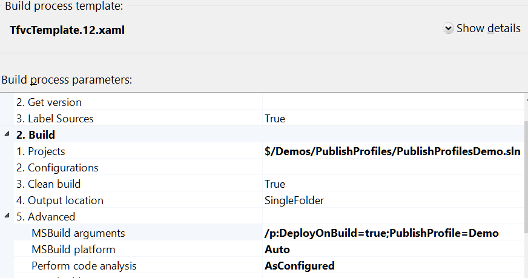

If I have to do something three times, it gets automated. The first time I'm just figuring out how to make it work. The second time ensures I know the process and can repeat it without all the exploration. The third time it gets automated and I can stop thinking about it.
Everytime I touch something, there is the chance for error. An automated process should be perfectly repeatable. Once you get it just right, you can back away and leave it alone to run happily.
If someone from your team has to manually deploy your application, there is a better way.
In the past, we could Publish with MS Deploy. It simplified things, but you still had some hurdles to jump. You needed to edit your projects manually and add build configurations for each environment. This is still a valid means of automating deployment in your team build, but it is more painful than necessary.
TFS Team Build
Microsoft has a build system as part of the Team Foundation set of tools. The on-premise version is called Team Foundation Server, or there is an "in the cloud" service called Visual Studio Online. Both flavors offer build capabilities, which I'll refer to jointly as TFS Team Build.
TFS Team Build offers a lot of power and flexibility, but we can leverage the publish profiles I introduced earlier to deploy a website or web app with just a couple of parameters.
Create a build definition
Creating a TFS Team Build definition is pretty simple. Here is an extremely quick run through with just the bare minimum so we can get to the deployment part.
1. From the Team Explorer, go the the Builds tab (Ctrl+0, B) and click "New Build Definition".
2. On the General tab, give your build a name.
 3. On the Source Settings tab, select the source control folder that has your solution/web project.
4. On the Process tab, pick your Build Process template (I'm using "TfvcTemplate.12.xaml". Select your project to build.
3. On the Source Settings tab, select the source control folder that has your solution/web project.
4. On the Process tab, pick your Build Process template (I'm using "TfvcTemplate.12.xaml". Select your project to build.
This is the important part. Still on the Process tab, drop down to the MSBuild Arguments line (maybe be hidden under an Advanced toggle). The exact location may vary according to your Build Process Template.
Add /p:DeployOnBuild=true;PublishProfile=<Publish Profile Name>. The Publish Profile Name does NOT include the .pubxml.
Here's what mine looked like 
That's it! A very simple build definition will get the job done.
Web Publish Series
- Config transformations
- Publishing Web Site Projects
- Automatic deployment with TFS Team Build
- Set up your web server for web deployment.
- Using publishsettings files to publish to Azure (and other hosting providers)